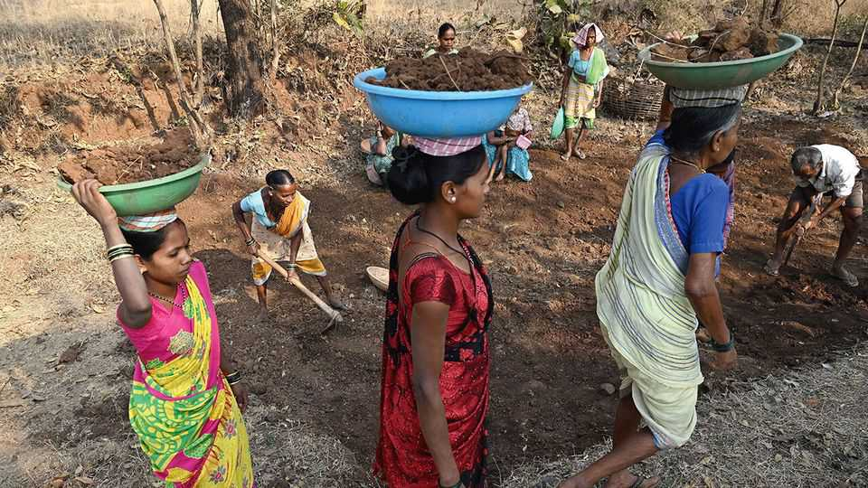

India’s government overhauls a vast workfare programme
Critics say it has been gutted
July 2nd 2026

India’s ruling Bharatiya Janata Party (BJP) loves a name change, a good acronym and flexing its Hindu credentials. Last December it combined all three to replace the Mahatma Gandhi National Rural Employment Guarantee Act (MGNREGA) with the Viksit Bharat–Guarantee for Rozgar and Ajeevika Mission (Gramin)—which translates from Hinglish as “Developed India–Guarantee for Employment and Livelihood Mission (Rural)”. As an acronym it is VB-G RAM G, a reference to Ram, a revered Hindu god.
This was far from a mere rebrand. VB-G RAM G, which began officially on July 1st, revamps a scheme that has been a pillar of India’s rural-development policy since 2005. Combining social protection with public works, it guaranteed 100 days of paid toil to any rural household that demanded it. Plenty did: in 2024-25 some 60m households were employed on an assortment of projects, from wells and ponds to rural roads. The scheme earned international acclaim for its scale and ambition: the World Bank has called it the world’s largest public-works programme, and the International Labour Organisation has recommended that other developing countries copy it; many, including Bangladesh and South Africa, have done so.
The government argues that its new scheme is an improved version of the old one. Workers can now get 125 days of work, rather than 100, and they will work on a narrower set of tasks to build “productive infrastructure”; many of the previous projects, it argues, were of little real value. But opponents say the scheme is being gutted. “The government has essentially removed the legal guarantee of work that made MGNREGA so unique,” says Nikhil Dey, the founder of an advocacy group that helped draft the original act.
The issue is how the programme is funded. Under the old law, the central government covered the full wage bill, but the new scheme sets a limited allocation of funds for each state every year—a fixed sum that, once exhausted, leaves the states to cover any further cost. That, says Mr Dey, converts a legal right into a capped scheme with a limited budget.
State governments are pushing back: some may challenge the new law in the Supreme Court. It has also become an international cause: a coalition of global economists, including Thomas Piketty and Joseph Stiglitz, have signed an open letter urging that the new scheme be repealed, calling it a historic error.
None of that has swayed the government. Many in the BJP’s leadership have long viewed the old scheme with contempt. Soon after coming to power in 2014 Narendra Modi, the prime minister, mocked MGNREGA as a “living monument” to the previous Congress government’s failures, jibing that it forced Indians into “digging holes in the ground”.
The flaws were real. In many parts of the country, participants were denied the work they were supposedly guaranteed because of a lack of funds or bureaucratic inertia. In such cases, they were entitled to an unemployment allowance; but only around 8% of what was owed between 2019 and 2025 has been paid. Even when work was provided, wages were delayed. Corruption was commonplace.
Activists, however, do not believe the new approach will fix any of this. There is little clarity on how wages will be set. Moreover, the new financing structure could force cash-strapped states to ration work. The MGNREGA Sangharsh Morcha, an activist coalition, estimates that at the funding levels proposed for this year, several states will be able to provide barely a fifth of the promised 125 days of work.
All this risks jeopardising a programme that delivered big benefits even with all its implementation problems. Since its inception a plethora of studies have examined the impact of MGNREGA and found positive effects. At a minimum, it gave the poor a cushion during economic shocks (demand for work surged during the pandemic, for example). But it was far more than that. Studies suggest it empowered women and India’s lower castes. It also raised private-sector pay, as employers were forced to put up wages to compete with the scheme.
The erosion of such benefits would come at a difficult moment. The rural economy is under strain: wages have barely increased for more than a decade, despite rapid economic growth. The war in Iran has pushed up fuel costs and this year’s monsoon has been weak. A workfare scheme that no longer reliably provides work could leave Mr Modi’s government in a hole of its own. ■
Stay on top of our India coverage by signing up to Essential India, our free weekly newsletter.